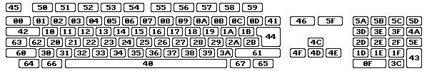
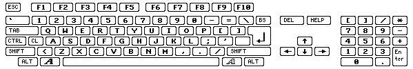
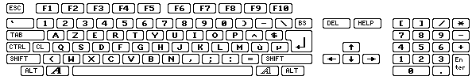
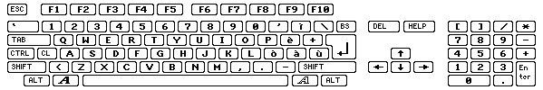

Tastatur RAWKEY koderne
Alle taster benyytet med WHDLoad skal specificeres som raw key koder.
Her følger derfor en tabel, der viser alle rawkeys i hexadecimal-notation:

for sammenligning er her us keymap:

her den franske keymap:

og her den tyske keymap:
og her den italienske keymap:

Knap-koderne
Begyndende med WHDLoad version 16.8 er det også muligt at lukke WHDLoad ved at bruge en knap på musen, joystick eller joypad. Til dette brug er der specielle rawkeys
defineret og listet i tabellen herunder. Disse rawkeys virker kun med QuitKey optionen, ikke med nogen anden taste-option.
For at sætte WHDLoad i stand til at detektere et tastetryk: tryk på optionen NoVBRMove må ikke benyttes, CPU'en skal mindst være en 68010, og det installerede program skal have det vertikale blank-interrupt aktiveret.
De enkelte rawkeys er listet i hexadecimal og decimal notation.
Brug af knapper på en joypad ($103..$10a/$113..$11a) som a QuitKey vil gøre det umuligt for det installerede program at detektere/checke/bruge en joypad. Det installerede program vil tro, at et joystick er tilsluttet.
Dette skyldes nogle af hardwarebegrænsningerne; at joypad'en kun kan checkes én gang i løbet af 1/50 sekund. Så brug det ikke til spil, der kræver en joypad.
QuitKey'en brugt ved at trykke på Reverse,
Forward og Play samtidig er understøttet fra og med WHDLoad version 18.4.
rawkey port 0
som regel mus |
rawkey port 1
som regel stick/pad |
Mus |
Joystick |
Joypad |
Megadrive |
Master System
TecnoPlus |
| $100/256 |
$110/272 |
venstre knap |
fire |
Rød/Vælg |
B |
A |
| $101/257 |
$111/273 |
højre knap |
anden fire |
Blå/Stop |
C |
B |
| $102/258 |
$112/274 |
midterste knap |
| $103/259 |
$113/275 |
|
|
Play |
| $104/260 |
$114/276 |
|
|
Reverse/Venstre øre |
| $105/261 |
$115/277 |
|
|
Forward/Højre øre |
| $106/262 |
$116/278 |
|
|
Grøn/Shuffle |
| $107/263 |
$117/279 |
|
|
Gul/Loop |
| $108/264 |
$118/280 |
|
|
Rød/Select |
| $109/265 |
$119/281 |
|
|
Blue/Stop |
| $10a/266 |
$11a/282 |
|
|
Play+Reverse+Forward |
I WHDLoad-versionerne 16.4 - 16.7 var det muligt at bruge en QuitKey-værdi $73
for at afslutte ved at trykke på venstre museknap. Dette virker ikke længere i WHDLoad
version 16.8 og senere. Den nye rawkey kode $100 skal i stedet benyttes til dette.